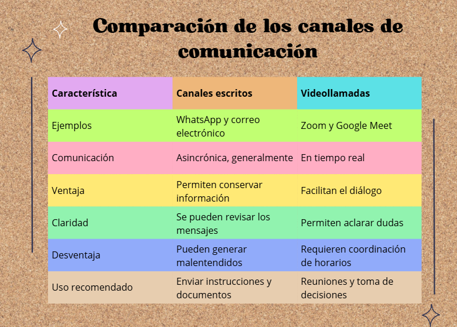
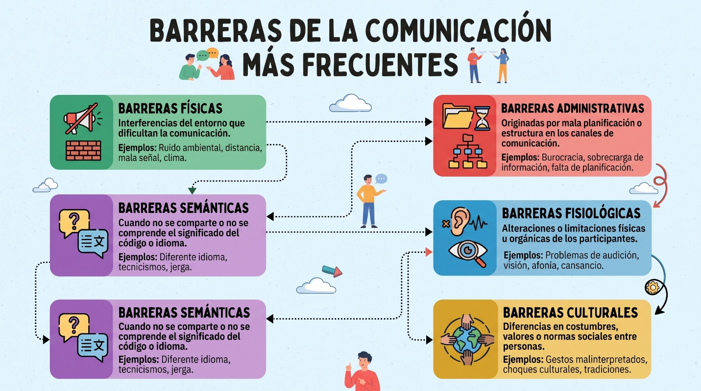
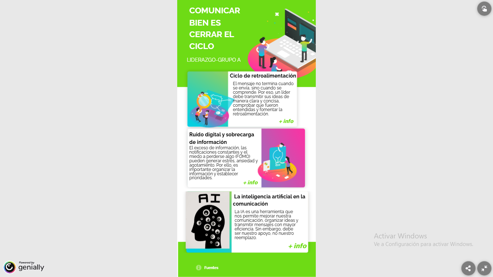
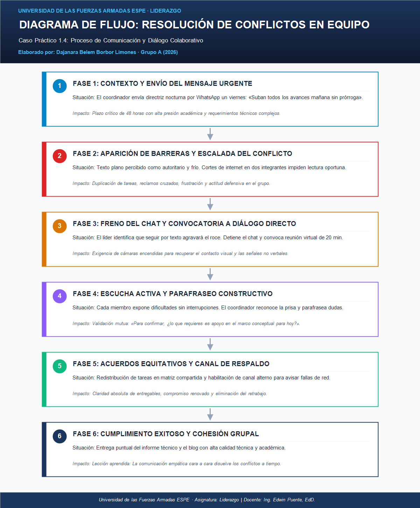

1. Proceso de Comunicación en Entornos Digitales y Organizacionales
1.1 Envío del Mensaje, Claridad e Intencionalidad
Investigación: Nicole TonatoEn el ámbito de las organizaciones contemporáneas y los entornos formativos, la comunicación digital no consiste únicamente en transmitir información, sino en asegurar que el emisor estructure el mensaje con un propósito claro, seleccionando los canales adecuados y verificando la comprensión precisa por parte de los destinatarios. Un emisor eficaz asume la responsabilidad de definir el tono, el momento oportuno y el formato idóneo para evitar ambigüedades.
Caso Práctico Aplicado: Organización de la Feria Académica
Un coordinador de una institución de educación superior debe asignar responsabilidades y cronogramas a un equipo docente diverso. Para erradicar confusiones, implementa una estrategia multicanal coordinada:
- Videollamada síncrona: Para socializar la visión global del proyecto y absolver dudas conceptuales en vivo.
- Correo electrónico institucional: Para formalizar el acta de acuerdos, cronograma y matrices de entregables.
- Mensajería instantánea (WhatsApp): Uso exclusivo para alertas atómicas y recordatorios ágiles de avance.

1.2 Recepción del Mensaje, Contexto y Barreras Comunicacionales
Investigación: Francis BatallasEn el contexto organizacional, la comunicación solo se consolida de forma exitosa cuando el receptor comprende el mensaje en la dimensión exacta concebida por el emisor (Robbins & Judge, 2017). El receptor no cumple un papel pasivo ni opera como un simple buzón; por el contrario, actúa como un intérprete activo que decodifica cada palabra a partir de sus vivencias laborales previas, escala de valores y estado anímico particular (Chiavenato, 2020).
| Barrera Digital Crítica | Riesgo en el Desempeño | Estrategia Práctica de Mitigación |
|---|---|---|
| 🔴 Fallas de red y conectividad | Pérdida de directrices e ideas cortadas en llamadas. | Grabar sesiones y ratificar acuerdos mediante minutas compartidas. |
| 🟡 Fatiga informática de pantallas | Lecturas superficiales y olvido de plazos pactados (Peiró & Soler, 2020). | Estructurar directrices en listas numeradas y espaciar reuniones. |
| 🟠 Frialdad del texto plano | Mensajes percibidos como cortantes o autoritarios. | Emplear trato cordial y sustituir cadenas de texto por llamadas breves. |
| 🟢 Suposiciones e inferencias | Duplicación involuntaria de esfuerzos y retrasos. | Aplicar técnica del parafraseo y formular preguntas aclaratorias. |

1.3 Ciclo de Retroalimentación, Ruido Digital y Nuevas Tecnologías
Investigación: Paola AmaguayaLa retroalimentación constituye el elemento de cierre del proceso comunicativo, garantizando que el emisor verifique si su mensaje fue interpretado conforme a su propósito original. Zyberaj (2026), mediante una revisión sistemática y metaanálisis de 24 investigaciones empíricas, evidencia que la efectividad del feedback supervisado depende sustancialmente del modo en que el colaborador lo procesa internamente, lo valida y decide modificar su conducta laboral.
En los entornos contemporáneos de trabajo híbrido y virtual, este flujo bidireccional se ve amenazado por el fenómeno del ruido digital y la infoxicación. Marsh et al. (2024), tras evaluar a 142 profesionales digitales, demostraron que la sobrecarga de datos y la angustia por perder información crítica (FOMO) elevan significativamente los índices de estrés y propician el agotamiento laboral (burnout).
Adopción Ética de la Inteligencia Artificial Generativa (Enfoque 2026)
Herramientas de IA optimizan la redacción de informes y automatizan minutas de acuerdos. No obstante, Mayer y Schwehn (2025) advierten que, si bien la inteligencia artificial incrementa la eficiencia de tareas técnicas, su empleo acrítico puede provocar desalineación en el aprendizaje colaborativo y deshumanización de los vínculos de trabajo. La tecnología debe potenciar, mas no reemplazar, la empatía y la calidez del diálogo humano.

1.4 Caso Práctico Aplicado: Resolución de Conflictos en Equipos Virtuales
Modelado: Dajanara BorborUn equipo multidisciplinario de cinco estudiantes universitarios de la ESPE debió coordinar la entrega final de un proyecto técnico y su entorno web bajo una ventana temporal crítica de 48 horas. Afectado por la presión, el coordinador emitió una directriz apresurada mediante un mensaje plano un viernes por la noche: «Por favor, suban todos sus avances terminados mañana a primera hora sin falta, no hay prórrogas».
Al carecer de modulación afectiva, varios colaboradores lo percibieron como una imposición fría y desconsiderada. Cortes imprevistos de red impidieron que dos miembros vieran la notificación, desatando duplicidad de tareas, reclamos y una actitud defensiva (Robbins & Judge, 2017).
Frente al conflicto, el líder convocó a una reunión síncrona de veinte minutos con cámaras encendidas para restablecer la confianza, reconoció la precipitación de su mensaje y aplicó la técnica del parafraseo («Para confirmar que estamos alineados, ¿lo que requieres es apoyo con el diagrama para entregar a las 18h00?»; Chiavenato, 2020), reorganizando las tareas con éxito.
